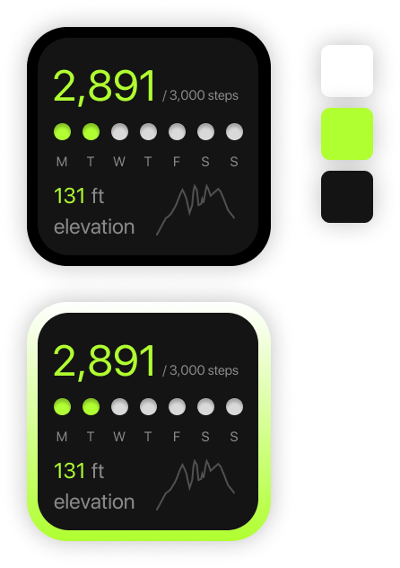
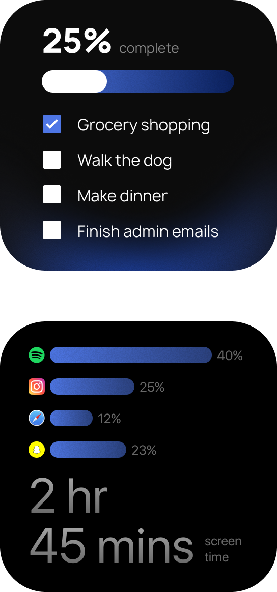

I thought it would be an interesting challenge to work with restricted space, while presenting
information in a digestable format. Each widget had unique obstacles. This project
enchanced my methods for solving problems while excercising my eye for aesthetics. I wanted to push my
typography skills in this project, and work from stratch with only a short task description for reference.
Working with limited space created new opportunitiesfor growth and allowed me to think outside of the box.

The Breakdown.

Progress Visualization
When working with limited space, It is important to quantify user data in such a way that is easy
to understand. Visualization reduces the amount of words need to communicate an idea or statement.
This manifested into progress bars and counters within this project. Not only does this reduce clutter, but it gamifies
the interface and encourages engagement with the application. When I initally executed this feature, it became
apparent that there is more nuance to small details than I orginally thought. After gaining some user insight during
criques, people were misinterpreting the visuals for buttons. I had to refine the the visual features for better clarity
and after multiple initeration, I learned to be more flexable and adaptable to consumer expectations.